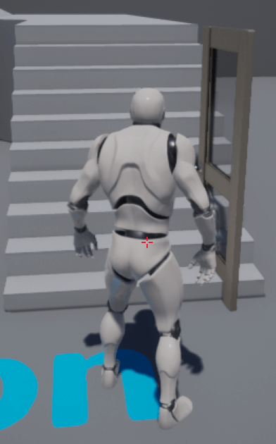
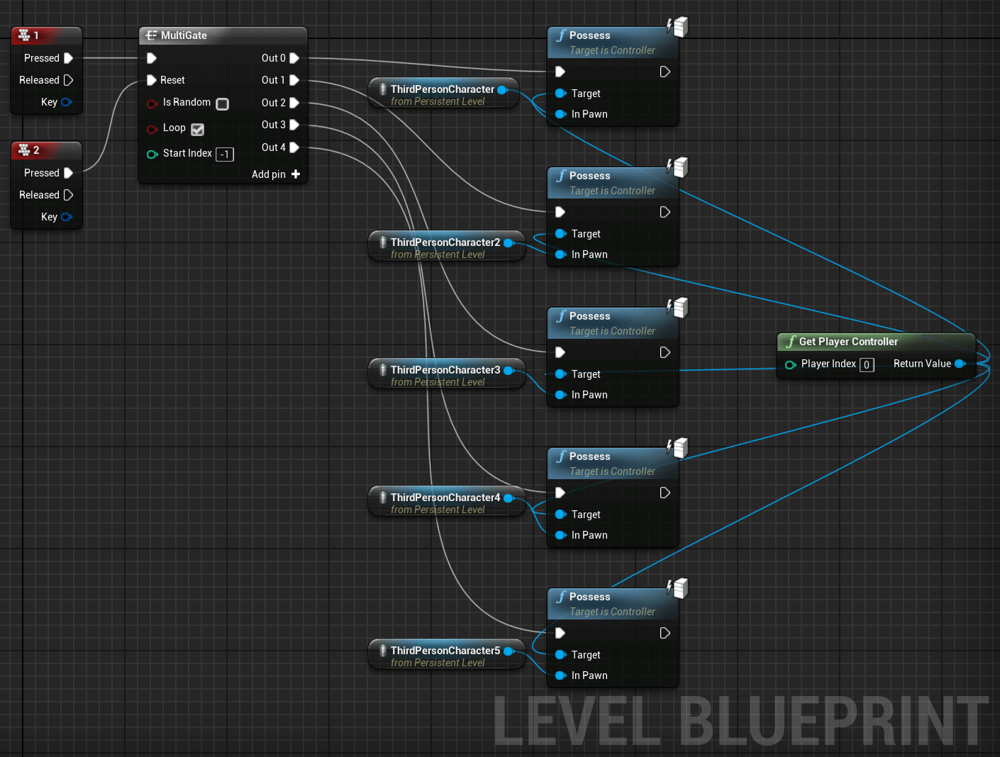
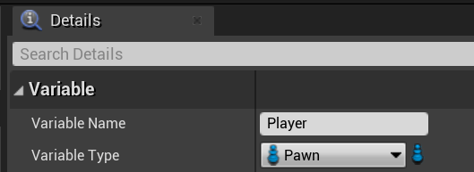

资源
课程
蓝图
【蓝图】01 课：开关门互动实现
新增 - 添加功能或内容包…… 中，添加 第三人称游戏 以及 Starter Content。
编辑 StarterContent/Props/SM_Door 对象，添加盒体简化碰撞，调整碰撞大小至合理范围内。
在场景中放上门，以及 盒体触发器。
将门设为 可移动。
打卡关卡蓝图。
选中 盒体触发器，往蓝图中添加 OnActorBeginOverlap 和 OnActorEndOverlap。
选中门对象，添加 设置 Actor 位置和旋转。
添加 时间轴，设置两个关键帧：(时间 0.0，值 0.0) 和 (时间 2.0，值 85.0)，设置时间轴长度为 2.00，右击起点，让动画曲线平滑。
最后蓝图如图所示。

最终效果：当人物走进 盒体触发器 范围内时，门就会绕 z 轴旋转 85°。
【蓝图】02-1 课：按键 + 鼠标点击实现开关门
内容浏览器 下，创建一个 蓝图类。
父类 选择 Actor。
在新建的蓝图类中，添加组件 - 静态网络体组件。
Static Mesh 中选择门框。同样地以此法再创建一个门。
添加组件 - Box Collision，调整好大小。

像上节那样绘制蓝图。
如果想让角色进入区域后按 E 开门，可以如上绘制蓝图。
Gate 是一个门，当玩家进入/离开区域时 Open/Close 这个门，按下 E 后 Enter 这个门。
Flip Flop 接收到 Exit 的信号后输出 A，之后改为输出 B，再之后改为输出 A，循环往复。
如果想让角色进入区域后鼠标点击门后开门，可以选择门对象，细节 面板拉到最下方，选择 点击时，拖入蓝图，替换原先的 E 节点。
世界场景设置 中，创建一个新的 玩家控制器类 的蓝图。
Mouse Interface 中，启动 点击事件，鼠标点击才有效。
修改蓝图如上所示。

现在关闭 显示鼠标光标。
蓝图中关闭 情境关联，添加 设置 Show Mouse Cursor。
修改蓝图，当玩家进入区域时，才会显示鼠标指针。
【蓝图】02-2 课：补录教程，BUG 修复
源教程说之前的有 Bug，当玩家第一次进入区域时不开门，要走出区域后再进去才会开门……我还没出现过这个 bug。
解决方案是前面加上一个类别判断。
【蓝图】03-1 课：字体导入、光照重建
导入字体方法：
- 直接拖
内容浏览器中，创建用户界面-字体。
如果想关闭”光照需要重建“的提示，可以在 世界场景设置 中的 Lightmass 下关闭 强制无预计算光照。
【蓝图】03-2 课：通过按键升降电梯
往默认场景上面建个二楼。
创建一个蓝图，里面放上电梯：Cube 电梯平台上一个 Box 触发器。
绘制这么一个蓝图。时间轴 包含两个坐标点 (时间 0.0，值 0.0) 和 (时间 2.0，值 1.0)。这个 时间轴 连接着 插值，功能类似与 Unity 的 Lerp。
开跑！
【蓝图】03-3 课：双开旋转门
如此构建一个双开旋转门。记录下 Door 和 Door1 开门/关门时的相对旋转值。
两个门二选其一点击都会开门。注意节点间连线！
开跑！
【蓝图】04 课：拾取钥匙开门
构建一个门框里一个门的场景。
在门的蓝图里创建变量 haveKey。
给这个变量设置类型为 Bool，默认值 haveKey 设为 False。
绘制蓝图如上所示，增加一个 分支 作条件判断，要有钥匙并按 E 才能开门。
新建一个钥匙蓝图。
以此法获得门蓝图的 haveKey。
绘制钥匙的蓝图。获取完钥匙后，给 haveKey 设为 True，然后销毁钥匙对象。
【蓝图】05-1 课：什么是蓝图通信和自定义事件
在 UE4（Unreal Engine 4）中，蓝图通信和自定义事件是实现游戏逻辑和交互的重要工具。它们使得开发者能够以可视化的方式编写复杂的逻辑，而不需要深入到代码层面。接下来我会分别对蓝图通信和自定义事件进行简介，并且解释它们如何协同工作。
蓝图通信
蓝图通信是指在不同的蓝图实例之间传递信息或调用功能的过程。在 UE4 中，有几种常见的蓝图通信方式：
- 直接调用：如果你已经拥有目标蓝图的引用，可以直接调用其公开的函数或访问其变量。
- 事件广播：使用事件分发器（Event Dispatcher），一个蓝图可以广播一个事件，其他蓝图可以绑定这个事件，当事件被广播时，绑定了该事件的所有蓝图都会执行相应的响应函数。
- 接口：蓝图接口可以定义一组函数，任何实现了该接口的蓝图都必须实现这些函数。这允许不同的蓝图通过一个共同的接口来通信，而不需要知道对方的具体实现。
自定义事件
自定义事件是在蓝图中创建的用户定义事件，它们允许开发者在特定的时间点触发预定义的逻辑。自定义事件的使用非常灵活，可以在同一个蓝图内部触发，也可以设置为公开的，由其他蓝图触发。
蓝图通信与自定义事件如何协同工作
蓝图通信和自定义事件经常一起使用来实现复杂的游戏逻辑。例如，一个角色蓝图可能会在受到伤害时广播一个事件，而一个 UI 蓝图监听这个事件来更新玩家的生命值显示。这个过程中，角色蓝图中的受伤逻辑会触发一个自定义事件，UI 蓝图则通过事件广播机制来响应这个事件。
实践步骤简述
创建自定义事件：在目标蓝图中创建一个自定义事件，并添加所需的逻辑。
触发自定义事件：根据需要在同一蓝图或其他蓝图中触发这个自定义事件。如果是从其他蓝图触发，需要有一个对目标蓝图的引用。
使用事件广播：如果需要多个蓝图响应同一个事件，可以使用事件分发器。在发送事件的蓝图中创建事件分发器，并在适当的时间点广播事件。在其他蓝图中，绑定这个事件分发器，以便在事件发生时执行响应的逻辑。
通过合理利用蓝图通信和自定义事件，开发者可以构建出复杂且高效的游戏逻辑和交互体验。
【蓝图】05-2 课：什么是类型转换
在 UE4（Unreal Engine 4）的蓝图系统中，类型转换是一种常用的操作，它允许开发者在不同类型的对象之间进行转换，以便访问特定类型所特有的属性或方法。类型转换主要用于父类和子类之间，或者接口和实现该接口的类之间的转换。正确地使用类型转换对于构建复杂的游戏逻辑和维护代码的清晰度至关重要。
类型转换的使用场景
- 访问子类特有的属性或方法：当你有一个指向父类的引用，但需要访问子类中定义的特定属性或方法时，就需要将这个父类引用转换为子类引用。
- 检查对象的具体类型：在处理多态性时，你可能需要判断一个父类引用实际上指向的是哪一个子类的实例，以便执行相应的逻辑。
如何进行类型转换
在 UE4 的蓝图中，进行类型转换通常使用“Cast To [目标类型]”节点。这个节点尝试将输入的对象转换为目标类型。如果转换成功，它会输出转换后的对象，并触发“成功”分支；如果转换失败，即输入的对象不能被转换为目标类型，它会触发“失败”分支。
类型转换的示例
假设我们有一个游戏角色的基类
BaseCharacter，以及两个继承自这个基类的子类HeroCharacter和EnemyCharacter。如果我们从场景中获取了一个BaseCharacter的引用，但我们知道这个引用实际上指向的是HeroCharacter的实例，我们就可以使用类型转换将这个引用从BaseCharacter转换为HeroCharacter，以便访问HeroCharacter中定义的特定方法或属性。类型转换的注意事项
- 性能考虑：频繁地使用类型转换，尤其是在每帧调用时，可能会影响游戏性能。因此，应当谨慎使用，并寻找可能的替代方案。
- 转换失败的处理：在进行类型转换时，总是需要考虑转换失败的情况，并在“失败”分支中适当处理，以避免运行时错误。
通过理解和正确使用类型转换，你可以更加灵活地设计和实现游戏中的交互逻辑和功能。
【蓝图】05-3 课：创建自定义事件 + 设置角色移动速度
【蓝图】05-4 课：调用自定义事件 + 实现触发加速
在 ThirdPersonCharacter 这个蓝图中，创建一个新的 Graph，命名为 OnAccerlate。
在 OnAccerlate 这个图表中定义事件 OnAccerlate_Event，触发这个事件允许其它蓝图 SET 变量 Max Walk Speed 的值（先布白线再布绿线）。
创建一个加速区域的蓝图。
绘制蓝图如上所示。进入/离开区域时加速/恢复原速。
开跑！
【蓝图】06-1 课：对象引用、变量有效性
在 Unreal Engine 4 (UE4) 蓝图系统中，理解对象引用和变量有效性是至关重要的。这不仅影响游戏的稳定性和性能，也是编写高效、可靠蓝图代码的基础。以下是对对象引用和变量有效性的详细解释以及它们在 UE4 中的应用。
对象引用
对象引用是指向游戏世界中实体（如角色、道具、场景中的物体等）的指针或链接。在 UE4 的蓝图中，几乎所有的交互都是通过对象引用来完成的。正确管理对象引用是确保游戏运行顺畅的关键。
- 获取对象引用：可以通过多种方式获取对象引用，如通过关卡蓝图直接引用、使用“Get Actor of Class”、“Find All Actors of Class”节点搜索特定类型的对象、碰撞检测、触发事件等。
- 使用对象引用：一旦获得对象引用，就可以调用其函数、访问其变量或修改其属性等。
变量有效性
变量有效性指的是变量当前是否引用了一个有效的、未被销毁的对象。在 UE4 中，尤其是在处理动态生成和销毁的对象时，检查变量的有效性非常重要，因为尝试访问已销毁对象的引用会导致游戏崩溃。
- 检查变量有效性：UE4 提供了“IsValid”节点，允许在访问对象之前检查引用的有效性。如果对象引用无效，可以适当处理，比如重新获取引用或跳过某些操作，从而避免错误。
- 引用计数和垃圾回收：UE4 的垃圾回收系统会自动管理内存，销毁不再使用的对象。对象是否被销毁取决于它是否还有有效的引用指向它。因此，合理管理对象引用，避免不必要的持有，对于优化内存使用和性能至关重要。
最佳实践
- 及时检查引用有效性：在访问对象引用之前，使用“IsValid”节点检查其是否有效，尤其是在引用可能指向动态生成或可能被销毁的对象时。
- 避免循环引用：循环引用发生在两个或多个对象相互持有对方的引用，这可能导致垃圾回收器无法正确清理这些对象，从而引起内存泄漏。使用弱引用或设计时注意对象之间的依赖关系，可以帮助避免这一问题。
- 合理管理对象生命周期：理解和规划游戏中对象的创建、使用和销毁流程，可以有效减少性能问题和意外的错误。
掌握对象引用和变量有效性的概念，对于开发稳定、高效的 UE4 项目至关重要。通过以上的最佳实践，可以更好地管理和利用 UE4 的蓝图系统，创造出令人满意的游戏体验。
【蓝图】06-2 课：实现键盘控制物体自转
新建一个想要自转的物体的蓝图，命名为 Cube。
绘制蓝图如上所示。
Event Tick 类似于 Unity 里的 Update()，当变量 canRotate 为 True 时，Cube 里的立方体开始自旋！
在玩家的蓝图 ThirdPersonCharacter 里，新建一个新的图表 RoateCube，添加变量 rotate，点击旁边的眼睛让这个变量设为 public。
让这个 rotate 变量的类型设为之前定义的 Cube。
这么画 RoateCube 里的蓝图。Is Valid 判断 rotate 这个变量是否为空，防止报错。
世界大纲中创建 ThirdPersonCharacter 蓝图的实例，获取它控制权。
设置这个实例的 Rotate 指向的对象 Cube。开跑！按下 1 即可使得立方体旋转。
【蓝图】07-1 课：简单点名系统
【蓝图】07-2 课：get all actor 的使用顺序
场景中放置多个 Cube 类。
如果这么画 RoateCube 里的蓝图，按下 1 将会使场景中序号为 0 的 Cube 自旋。
记得在 Get All Actors Of Class 里选择 Cube 类。
如果这么画 RoateCube 里的蓝图，按下 1 将会使场景中的所有 Cube 自旋。
【蓝图】08 课：制作简单解谜游戏
构建一个样的场景，玩家进门进入暗室，点开暗室中的 6 个灯后机关门打开，之后可以坐电梯上二层。
创建门如上所示。
绘制门的蓝图如上所示。
当玩家进入 Box 时，会显示提示文字，之后按 F 开门，隐藏提示文字。
创建灯的蓝图如上所示。
定义两个变量，一个是自己灯是否亮起的变量 lighted，另一个是 canOpenTheDoor，当所有灯亮起时，开启机关门。
绘制蓝图如上所示。（这部分我感觉还是用代码比较简洁一点）
canOpenTheDoor 为 True 时将调用稍后定义的 OpenTheDoor_Event 事件。
此法，打开关卡蓝图。
定义一个事件 OpenTheDoor_Event。
选中待旋转的机关门，在关卡蓝图中引用。
事件 OpenTheDoor_Event 触发时，打开机关门。
注意！机关门对象必须是可移动的，才会打开！
【蓝图】09 课：多个角色控制权切换

往场景中整 5 个 ThirdPersonCharacter。

这么绘制关卡蓝图。按下 1 时切换 Possess 到另一个角色。

这么绘制关卡蓝图。使得切换角色时有镜头跟随效果。

选中若干节点，右击可打包成宏。减少蓝图复杂度。
绘制最终蓝图如上所示。
【蓝图】10 课：角色上下车功能
这节课好长……
导入一个车车的模板。
绘制一个 Box Collision 表示上车的位置。
在驾驶位上安一个 Sphere Collision，把它的碰撞给我关了（Collision Presents 设为 NoCollision）。
给小白人定义一个变量，类型为车的蓝图类。
绘制小白人的蓝图。按 F 触发 GetOn_Event。
绘制小蓝车的蓝图。GetOn_Event 会让玩家控制车车。
但是这么做不会让小白人跟着车车走。接下来要让小白人跟着车车走。

给小蓝车添加一个变量 Player，类型设为 Pawn。

修改小白人的蓝图，把 Self 传递给事件 GetOn_Event。
修改小蓝车的蓝图。上车时将小白人的世界坐标设为与上车锚点一致。然后将小白人设为上车锚点的子对象。
选择所有上车的逻辑，按 C 打包，然后可以修改颜色，重命名等。
绘制下车锚点。
绘制下车蓝图如图所示。上车时将小白人的世界坐标设为与下车锚点一致。然后将小白人移出上车锚点的子对象。
SetViewTargetWithBlend 节点实现了切换角色时的摄影机过渡效果。
【蓝图】11 课：下车减速功能
下车的过程中给汽车松油门拉手刹。
添加一个变量使得下车的时候不允许接收油门输入。
【蓝图】12 课：冲刺、瞬移、多段跳
给小白人定义一个变量 Count，记录着按下 Shift 的次数。
按下 Shift 时候提高人物移动速度，0.2s 以内连按两次可以瞬移。
SetActorLocaton 中的 Sweep 如果打开，可以阻止穿墙。
这么修改蓝图可以在瞬移的时候有个镜头跳动的效果。
二段跳直接修改人物中的 Details 里的参数就行。
选看
【选看】常见问题和快捷键汇总
在这里可以自定快捷键。
在这里可以切换视口。
一、常用快捷键汇总
编辑器快捷键（不包括视口操作）
- 自定义快捷键
W、E、R分别是位移、旋转、缩放的快捷键Alt+2到0（9 除外）”视图模式切换- 正交和透视快捷键
ALT+L显隐地形（仅编辑模式）Alt+C显隐场景中的碰撞Alt+F显隐雾T是否能够选中半透明物体Ctrl+P快速打开资源Ctrl+Alt+鼠标左键框选H/Ctrl + H隐藏 显示选中物体鼠标中键测距（仅正交模式）Ctrl+E编辑选中物体（蓝图或者模型）Ctrl+B快速查找选中物体路径Ctrl+G打组Shift+G取消打组Alt+p开始游戏Alt+S模拟运行Ctrl+Z撤销上一步操作Ctrl+A全选Ctrl+X剪切Ctrl+W快速复制选中物体/变量/节点Ctrl+C/V复制粘贴Ctrl+N新建关卡Ctrl+Shift+S保存所有Alt+点击拖动鼠标快速复制F11全屏视口Shift+F11全屏引擎G游戏视图- 书签
L+鼠标左键在鼠标位置生成一个点光源
蓝图快捷键
G + 左键：Gate 节点
M+ 左键：MultiGate 节点
F + 左键：ForEachLoop 节点
0 + 左键：DoOnce 节点
N + 左键：Do N 节点
B + 左键：分支节点
S + 左键：顺序节点
D + 左键：延迟节点
C：注释
二、中英文命名注意事项
- 项目路径、引擎安装路径最好不要出现中文
- 变量和素材名称最好不要有除了下划线以外的特殊符号（有可能会引起打包失败）
- 注释可以使用中文
- 使用 C++ 编程都需要使用英文
由于引擎汉化支持越来越高，变量或者蓝图类、文件夹中文命名一般情况不会出现问题，但是还是建议用英文
三、帧和秒的概念 “帧”就是影像动画中最小单位的单幅影像画面，相当于电影胶片上的每一格镜头。
一帧就是一幅静止的画面，连续的帧就形成动画，如电视图像等。
我们通常说帧数，简单地说，就是在 1 秒钟时间里传输的图片的帧数，也可以理解为图形处理器每秒钟能够刷新几次，通常用 fps (FramesPerSecond) 表示。
每一帧都是静止的图像，快速连续地显示帧便形成了运动的假象。
高的帧率可以得到更流畅、更逼真的动画。每秒钟帧数 (fps) 愈多，所显示的动作就会愈流畅。
在虚幻引擎中，很多地方都有帧。
比如时间轴的 Update、EventTick 等都是以帧为单位进行实时更新计算的。
四、带星号文件的意思 未保存文件，如果不保存关闭引擎，下次打开将不会显示。
五、编译的作用 编译就是应用你写好的材质、蓝图、粒子特效等，有时候你进行了一些修改，编译就能够实时看到效果。
我们每次点击 play，其实就对所有素材进行了一次编译，具体的其实我也没有测试过，主要蓝图方面是这样的。
但是！！！
比如你新建了一个变量、自定义事件，你没有编译，就到另外一个蓝图中获得你新建的变量、自定义事件。就会有黄色的提示。这时候只需要回到新建变量的蓝图类中点击编译即可！
六、实例和原素材
我们通常放到场景中的模型，都属于实例。
对实例的素材进行修改，不会影响本体。
我们往场景中放入蓝图、模型，对蓝图进行数值修改，对模型进行材质替换。这些都是只针对当前场景生效的，并不会影响本体。
七、情景关联 情景关联就是根据当前使用的节点或者所在的蓝图类，进行相应蓝图节点的关联。
如：你当前在角色蓝图中，就会关联到角色控制的蓝图。
取消情景关联可以查看所有蓝图节点，但是会有很多无法使用，不兼容的蓝图出现。
八、返回的快捷键
通常我们买的游戏鼠标，侧边的按键默认就是返回的快捷键。
【选看】蓝图概念、面向对象思想、函数事件宏的区别
一、函数的概念
计算机函数：函数是指一段可以直接被另一段程序引用的程序。
一个较大的程序一般应分为若干个程序块，每一个模块用来实现一个特定的功能。所有的高级语言中都有子程序这个概念，用子程序实现模块的功能。在 C 语言中，子程序的作用是由一个主函数和若干个函数构成。由主函数调用其他函数，其他函数也可以互相调用。同一个函数可以被一个或多个函数调用任意多次。
在程序设计中，常将一些常用的功能模块编写成函数，放在函数库中供公共选用。要善于利用函数，以减少重复编写程序段的工作量。
二、宏的概念 宏可以加速日常编辑和格式设置 组合多个命令使对话框中的选项更易于访问 使一系列复杂的任务自动执行
在游戏中，宏也是如此，多个组合技能，连贯的操作都能够设置成宏。在《魔兽世界》这款游戏中，由于游戏的多样性，使得游戏中虚构的 13 个种族 12 大职业以及各种表情动作都十分繁杂，由此以来进行复杂的操作将是十分困难的事情，例如同时激活 2 种以上的法术，施法的同时用游戏中的聊天系统发送信息等。这时候宏命令就显得非常重要了。
在虚幻引擎中，宏一般用于计算，我们传入对应的数值，套入宏里面设置好的算法，然后输出计算完成的数值。
三、函数、事件的区别
- 事件里可以加延时节点（如 Delay），函数里不可以
- 函数里有返回值，事件里没有
- 事件可以作为回调函数，函数不能直接作为回调
- 事件可以作为输入事件和碰撞事件的处理
- 实现接口的时候，有返回值的会变成函数，无返回值的会变成事件
- 事件可以用来发送网络消息，而函数不行（网络）
四、变量的概念
变量来源于数学，是计算机语言中能储存计算结果或能表示值抽象概念。变量可以通过变量名访问。
变量：通常是可变的、具有存储空间的抽象
声明一个变量：虚幻 4 中就是创建一个变量 赋值：虚幻 4 中就是 Set，在没有赋值的情况下，变量是默认值
虚幻 4 中变量可以获得里面的数值，或者进行设置(赋值)更改变量中的数值。
五、面向对象思想（封装、继承、多态）
这是 C++ 的面向对象思想，虽然我们现在还没有涉及 C++，但是很多的用法我们已经正在使用中。
了解这个思想，有助于我们之后开发游戏制定好游戏的大框架。
我们要面对一个对象进行思考，比如我们要做一个角色，我们就要进行思考，要给这个角色添加什么属性功能。
万物皆对象： 世界是由各种各样具有自己的运动规律和内部状态的对象所组成的：不同对象之间的相互作用和通讯构成了完整的现实世界。所以对象是世界的核心。
六、封装、继承、多态
七、Object、actor、pawn、Character、component 之间的区别 继承、包含关系 Object>actor>pawn>Character Component 是包含在 actor 中的
八、actor 和关卡蓝图的关系 Actor>level blueprint actor，关卡蓝图也是一个 actor，并且是 actor 的子类。
【选看】蓝图接口的使用和用途
按之前的方式整一个门。
创建一个 Blueprint Interface，命名为 Door Interface。
定义一个 CanOpenTheDoor 函数，如果 Inputs 和 Outputs 类都为空，那么它还可以当事件使。
Door 类中的 Class Settings 中的 Implemented Interfaces，添加 Door Interface。
此时就可以往门的蓝图里引用 Event Can Open the Door 事件，绘制调用这个事件执行开门的逻辑。
小白人的蓝图里定义 Door 变量，绘制按 1 就触发 Event Can Open the Door 事件的逻辑。

绘制门的蓝图，设置/取消小白人里定义的 Door 变量。
此时小白人在 Box Collision 范围内按 1 就会开门。
【选看】拾取物品#1-射线检测的计算方式
整一个第一人称的关卡。选中玩家，Ctrl + E 进蓝图。
确保摄像机的 Location 的 x, y 均为 0。
这么画蓝图，相当于往摄像机前面放一个长度为 200 个单位的射线。
开跑！可以看到调试用的射线。
【选看】拾取物品#2-碰撞设置、蓝图接口
从 初学者系列教程素材_免费高速下载|百度网盘-分享无限制 (baidu.com) 整个枪械素材。
打开项目设置！

新增一个碰撞，命名为 PickUp，Default Response 设为 Ignore。
新建一个蓝图，选中枪械模型，就可以更方便地导入枪械模型到蓝图。

打开碰撞（Collision Enabled 设为 Collision Enabled (Query and Physics)），把 PickUp 的 Block 打开。
新建蓝图接口 PickUp_Interation，添加函数 PickUp（后两个功能原教程烂尾了……）
枪械的 Class Settings 里的 Implemented Interfaces 添加 Pick Up Interation。
由于这个枪械模型是骨骼模型不是静态模型，不能像静态模型那样添加碰撞，在这里添加一个物理。

设置物理范围。
打开枪械蓝图，选中所创建的物理，Physics 中按下左箭头，绑定物理。
此时射线检测成功识别到枪械。
继续绘制蓝图，射线检测成功时将射线命中的对象（枪械）传给 Pick Up，分发事件。
绘制枪械的蓝图，接收到 EventPickUp 事件后，销毁自身对象。